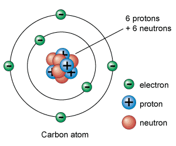

Atomic Theory
Atomic Theory of Matter – Matter is made up of fundamental particles
Early Thoughts:
- Scientists were aware that matter is made up of small particles
- But originally, they thought the atom was "invisible" (basically just little spherest that could not be broken down)
- Now – We know the atom is made up of (subatomic particles)
Rutherford's Gold Foil Experiment
- All of the mass of the entire atom is only that little, tiny nucleus!!
- Why? electrons weigh pretty much nothing!!
- Rutherford shot alpha particles at gold foil
- Most of the particles passed through the foild
=> atoms are mostly empty space - A few particles bounced back
=> small dense positively charge nucleus - Nucleus: small, dense core containing protons and neutrons
- Electrons sorround the nucleus
| Particle | Symbol | Relative Charge | Relative Mass | Location in atom |
|---|---|---|---|---|
| Proton | P+ | 1+ | 1 | Nucleus |
| Neutron | N0 | 0 | 1 | Nucleus |
| Electron | E- | 1- | 1/2000 ~ 0 | Outside the nucleus |
Part of the atom:

The nucleus:
- Located at the center of the atom
- Takes up alll the mass of the atom
- Contains P+ and N0
- E- surround it
Atomic Number("Z"): the number of protons
- THIS IDENTIFIES THE ELEMENT
- The atominc numbers are on the periodic table
In neutral atoms: the number of protons = the number of electrons
Ions: forms when an atom loses or gains an electron and becomes charged
-
Note: Opposite of what you think!!!
Gained an electron → (-) charge
Loses an electron → (+) charge - Example: Na1+ → lost an electron. S2- → gained 2 electrons
- To find the number of electrons, start with the number of protons and do the opposite of what the charge says.
-
Example: find the number of electrons for each element:
1) Ca2+
Mass Number("A"): the number of protons + the number of neutrons
- Most of the mass of an atom is concentrated in the nucleus. (Electrons don't really weigh anything.)
To find the number of neutrons in an atom: number of neutrons - atomic number
Mass Number on the periodic table:
If you are not given the mass number, round the atomic mass to a whole number
Isotopes: atoms that have the same number of neutrons
- Isotopes have different mass numbers because they have different mass
- Example:
carbon – 12 → Both have 6 protons, but
carbon – 14 → One has 6 neutrons, the other has 8 neutrons